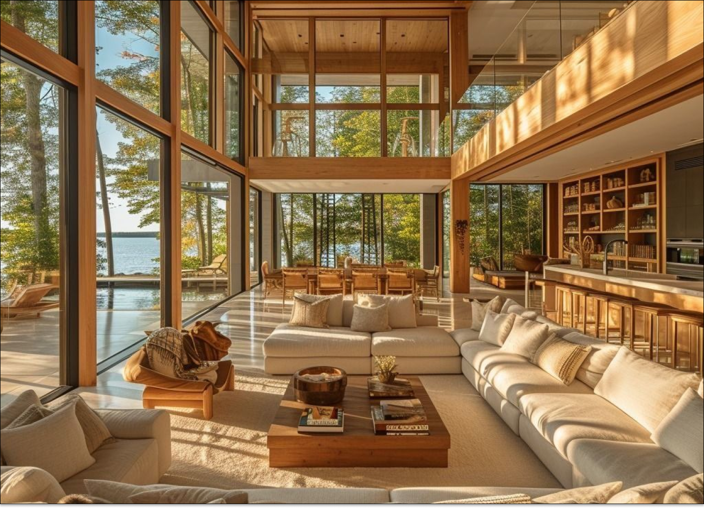

A DS Ambientes Planejados é uma empresa dedicada à criação de espaços personalizados e funcionais, proporcionando soluções de móveis planejados de alta qualidade. Com um foco na excelência e na satisfação do cliente, nossa missão é transformar ambientes, sejam residenciais ou comerciais, em locais únicos e adaptados às necessidades e gostos de cada cliente.
Ser a referência número um em móveis planejados no mercado, reconhecida pela qualidade excepcional dos nossos produtos e pelo atendimento diferenciado.
Transformar sonhos em realidade através de ambientes planejados que refletem a personalidade e o estilo de vida dos nossos clientes, proporcionando conforto e satisfação em cada detalhe.
Projetar móveis rústicos é mais do que simplesmente criar peças de mobiliário; é uma celebração da imperfeição cuidadosamente trabalhada, onde cada nó na madeira, cada irregularidade na textura, conta uma história de autenticidade e individualidade. Ao embarcar em um projeto de móveis rústicos, o designer é desafiado a harmonizar a simplicidade da forma com a complexidade dos materiais naturais. A madeira maciça, muitas vezes proveniente de árvores centenárias, é o coração dessas criações. Sua beleza natural é realçada através de técnicas de acabamento que respeitam e realçam sua textura única, criando uma peça que se destaca como uma obra de arte funcional. A durabilidade é uma característica essencial dos móveis rústicos. Projetados para resistir ao teste do tempo, esses móveis são construídos com técnicas tradicionais de carpintaria que garantem não apenas a sua longevidade, mas também a sua capacidade de envelhecer graciosamente, adquirindo pátina e charme com o passar dos anos.
O acabamento em móveis rústicos não busca a perfeição impecável encontrada em móveis modernos, mas sim a celebração da imperfeição cuidadosamente trabalhada. É o processo de realçar as características únicas da madeira, como nós, rachaduras, grãos e texturas, em vez de mascará-las. Através de técnicas de lixamento, escovamento e entalhe, o artesão revela a beleza crua da madeira, criando uma superfície que convida ao toque e à contemplação. As manchas e os acabamentos de verniz são aplicados com delicadeza e habilidade para realçar a cor natural da madeira e proteger sua superfície contra os rigores do uso diário. No entanto, o objetivo não é criar uma camada uniforme e brilhante, mas sim preservar a autenticidade da madeira, permitindo que suas características únicas brilhem através do acabamento. Além disso, o acabamento final em móveis rústicos pode incluir detalhes adicionais, como ferragens de ferro forjado, entalhes feitos à mão ou pinturas artesanais, que adicionam um toque de personalidade e charme à peça acabada. Cada detalhe é cuidadosamente considerado para garantir que a integridade e a autenticidade do design sejam preservadas.
Uma banqueta rústica feita de tronco é uma peça de mobiliário encantadora e natural. Geralmente, são feitas de um único tronco de árvore, o que confere um visual autêntico e orgânico ao ambiente. Elas podem apresentar design simples e tradicional, como uma mesa de fazenda.
Sobre produtoUma mesa rústica é uma peça de mobiliário que traz um apelo natural e acolhedor para qualquer espaço. Geralmente feitas de madeira maciça ou materiais naturais, essas mesas possuem características como imperfeições, texturas e acabamentos que ressaltam sua origem orgânica.
Sobre produtoCadeiras rústicas são peças de mobiliário que evocam um estilo simples, robusto e muitas vezes artesanal. Elas são frequentemente feitas de materiais naturais como madeira bruta ou ferro forjado e podem apresentar acabamentos que destacam a textura e a cor naturais dos materiais.
Sobre produtoFicou interessado? Preencha os campos do formulário para receber uma cotação.